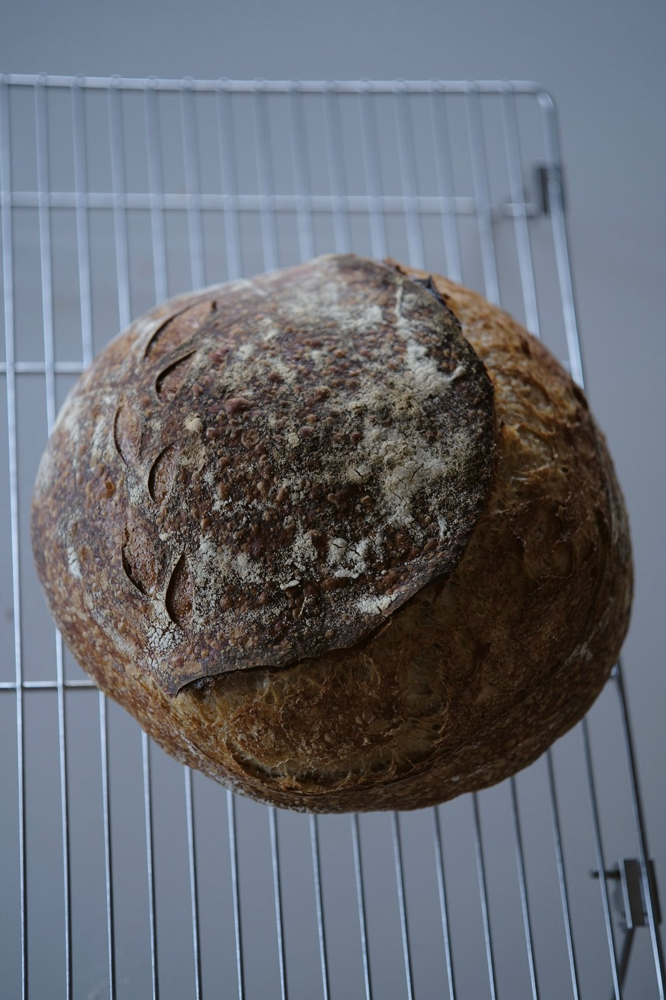
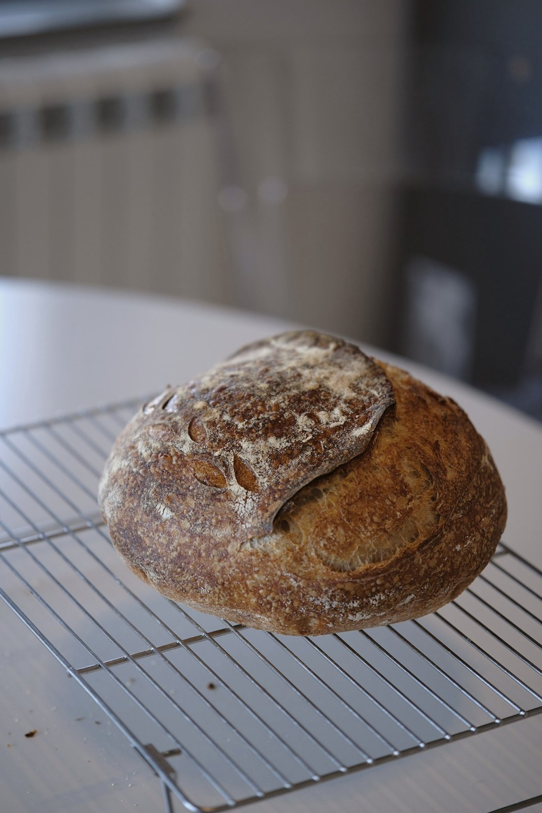
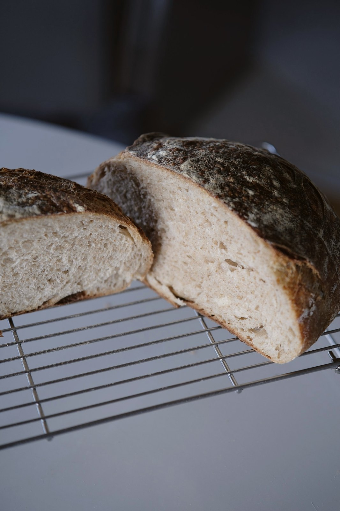
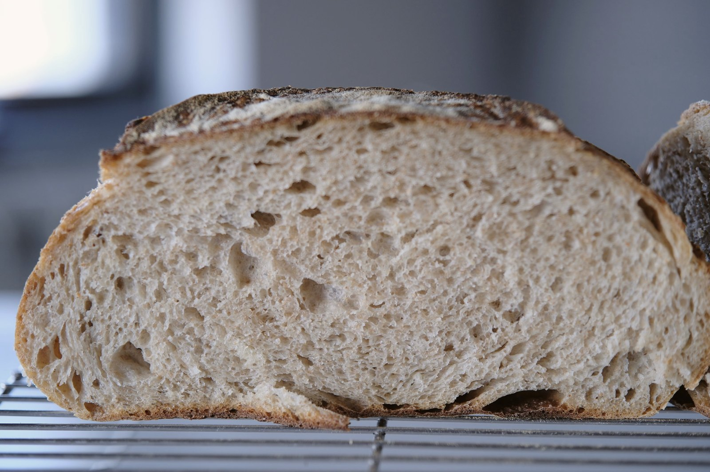

White wheat flour + 25% whole wheat flour. Stiff starter, lievito madre at 43% hydration — my standard, super-active one, the starter I baked bread and pastry on at my bakery. Using a different starter? Don't worry, the recipe can be adapted! Further down the recipe there's a calculator that converts it to a liquid starter and to any amount of flour and number of loaves. Dough hydration in this recipe is 75%. Sounds scary, it's simple.

what you need
Tick what you already have before you start. Almost everything has an easy swap — except the scale.
what goes in
Starter 43% = 21% of the flour. Inside it: 50 g flour + 21 g water (600 g loaf), 96 g flour + 41 g water (1150 g loaf).
liquid starter 100%?
- aSwap so the flour and water in the dough stay the same.
- b600 g: starter 100 g (not 71), water 204 g (not 233). Everything else the same.
- c1150 g: starter 192 g (not 137), water 391 g (not 446). Everything else the same.
- dAny other starter: it must carry 50 g / 96 g of flour; cut the dough water by whatever it brings above 21 g / 41 g. Or let the calculator do it.
Mine is Caputo Nuvola, 12.5%. Tools that matter: a scale, cast iron or any covered pot, and a blade for scoring.
what is this?
A calculator that rewrites this recipe for you. The recipe above is for 600 g and 1150 g of dough. Your bowl, your oven and your bag of flour are different — so type in what you have, and it tells you how many grams of everything to weigh.
how to use it · 3 steps
- 1Pick how you start. "Flour I have" — if you want to use what is in your cupboard: type how much white and how much whole wheat flour you have. "Dough I want" — if you know how big one loaf should be: type its weight, or tap 600 g / 1150 g.
- 2Say how many loaves and which starter you have: stiff (43%) or liquid (100%).
- 3Weigh exactly the grams on the right. Every number keeps the recipe's proportions, so the bread turns out the same as mine — just bigger or smaller.
Dough or bread? All weights in the calculator are dough. In the oven a loaf loses about 12–18% of its water: 600 g of dough → about 510 g of bread, 1150 g → about 980 g. Want 600 g of baked bread? Type about 700 g of dough.
Why two flours separately? The recipe needs 3 parts white to 1 part whole wheat. If you have little of one, the calculator makes the loaf smaller so neither runs out, and tells you which flour ends first.
how much do you have?
- aWeigh the water. Tear the starter into pieces — it gets to work faster.
- bWhite flour in, then whole wheat.
- cMix with a spatula, just to wet the flour. No gluten development yet.
- dCover and leave for autolyse.
just wet the flour
- aSalt in. Now knead properly.
- bTaste from two spots. One bland, one salty? Keep kneading.
- cAt the end, measure the dough temperature. Mine was 27 °C.
- dIn this recipe my working range is 23–25 °C. Above 26 °C fermentation in my process runs ahead of the gluten, so I cool the dough — 30 min in the fridge.
dough too warm? use cold water next time
- aOut of the fridge: the dough is 25 °C. A great temperature for fermentation in the apartment.
- bNext fold: wet hands, stretch one side up and fold it over, turn the bowl, repeat on all four sides.
- cCover and leave for 30 min until the next fold.
a calm dough, right on track
- aA fold every 30 minutes, four in total.
- bBy the third one you see bubbles. A good sign.
- cOn the fourth, check the gluten: stretch a piece thin. A window like this is what we want.
- dNow wait until the dough grows by 50–60%. Mine took about an hour and a half. And please forgive the sunset light in the last shots! I beeeg you
watch the dough, not the clock
- aPreshape: round it, tightening the top. Rest 20–30 min.
- bFinal shape: I do folds and swaddling. Any method you like works.
- cAnother 20–30 min proof, then into the fridge overnight, covered.
- dMy fridge is about 7 °C. At that temperature fermentation keeps going, so the overnight timing is for my fridge and this process: in a colder fridge the dough can stay longer, in a warmer one bake it earlier.
tension on top, not force
- aMorning. The dough looks like this — time to bake.
- bTurn it out onto a mat, score on the side.
- cThe dutch oven has been heating for an hour at 250 °C.
- dLid on — 20 min. Lid off, down to 220 °C — another 20–25.
the score opened a bit weakly? no worries! with a big loaf that's completely normal!
- aAutolyse 30–50 min → salt, knead → temperature check: above 26 °C, cool to 23–25 °C
- b4 folds, every 30 min → bulk until +50–60%
- cPreshape, rest 20–30 min → shape, proof 20–30 min → fridge overnight (~7 °C)
- dBake 250 °C lid on 20 min + 220 °C lid off 20–25 min
Timing is approximate. A liquid starter may run a little faster or slower than lievito madre.
| problem | possible cause |
|---|---|
| The loaf spread flat | Not enough structure developed, or overproofed |
| Dense crumb | Underfermented |
| Too sour | Starter ripeness and how the fermentation went |
| Crust too thick | Baking mode and moisture loss |
| The loaf barely opened | Shaping, proofing or scoring |
- aA slice of about 40 g is around 90 kcal. The whole loaf is about 2230 kcal · protein 82 g · fat 11 g · carbs 458 g.
- bOnly the flour counts: 487 g white (391 g in the dough + 96 g inside the starter) and 163 g whole wheat. Water and salt have no calories.
- cEstimate for a loaf that lost about 15% of its weight in the oven (1150 g of dough → about 980 g of bread). Weigh yours and divide the whole-loaf numbers by its weight for an exact figure.
- dCarbs include about 2.5 g of fibre. Salt: about 1.3 g per 100 g.



and… here it is
Here is our bread. The score opened a bit weakly — that's the volume. In homemade bread that's not the point. The point is taste, craft and love.
